전파전자통신기사 (2016-10-08 기출문제)
1과목: 디지털전자회로
1. 60[Hz]의 정현파 신호가 전파정류기에 입력될 경우 출력신호의 주파수는 얼마인가?
- 10[Hz]
- 30[Hz]
- 60[Hz]
- 120[Hz]
(정답률: 85%)

2. 변압기의 입력단 1차 권선비와 출력단 2차 권선비가 1:2일 때, 출력전압은 입력전압의 몇 배인가?
- 0.5배
- 1배
- 1.5배
- 2배
(정답률: 88%)
3. 스위칭 정전압 제어기에서 제어 트랜지스터가 도통되는 시간은?
- 부하 변동에 대응하는 펄스 유지 기간 동안
- 항상
- 과부하가 걸린 동안
- 전압이 정해진 제한을 넘은 동안
(정답률: 78%)
4. 다음과 같은 증폭기의 교류 입력전압의 크기가 20[mV]일 때 교류출력전압의 크기는 약 얼마인가?
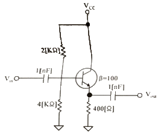
- 20[mV]
- 30[mV]
- 40[mV]
- 50[mV]
(정답률: 65%)
5. 다음 중 FET(Field Effect Transistor)에 대한 설명으로 틀린 것은?
- 입력저항이 수 [MΩ]으로 매우 크다.
- 다수 캐리어에 의해 동작하는 단극성 소자이다.
- 접합트랜지스터(BJT)보다 동작속도가 빠르다.
- 전압제어용 소자이다.
(정답률: 82%)
6. 다음 그림과 같은 부궤환 증폭기 회로의 궤환율은?
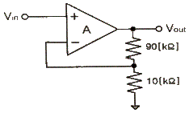
- 10
- 1.1
- 0.5
- 0.1
(정답률: 67%)
7. 다음 그림과 같은 연산증폭 회로의 전압이득(Vo/Vs)은? (단, 증폭기는 이상적이라고 가정하며, R1=R2=R3=30[kΩ], R4=2[kΩ]이다.)
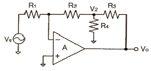
- -14
- -17
- -20
- -23
(정답률: 67%)
8. 발진기에서 기본 증폭기의 전압증폭도가 A이고, 궤환율을 β라고 했을 때 발진이 발생되는 조건은?
- A=100, β=1
- A=100, β=0.1
- A=100, β=0.01
- A=100, β=0
(정답률: 72%)
9. RC 발진회로에서 RC 시정수를 높게 할 경우 발진주파수는 어떻게 변하는가?
- 발진주파수가 높아진다.
- 발진주파수가 낮아진다.
- 무한대가 된다.
- 아무런 변화가 없다.
(정답률: 75%)
10. 400[Hz]의 정현파 변조신호로 주파수 변조를 하였을 때 변조지수가 50이었다. 이 때 최대주파수편이 △f는 얼마인가?
- 20[kHz]
- 40[kHz]
- 80[kHz]
- 100[kHz]
(정답률: 44%)
11. FM 검파 방식 중 주파수 변화에 의한 전압 제어 발진기의 제어 신호를 이용하여 복조하는 방식은?
- 계수형 검파기
- PLL형 검파기
- 포스터-실리 검파기
- 비 검파기
(정답률: 87%)
12. 다음 중 그림과 같은 변조파형을 얻을 수 있는 변조방식에 대한 설명으로 옳은 것은?
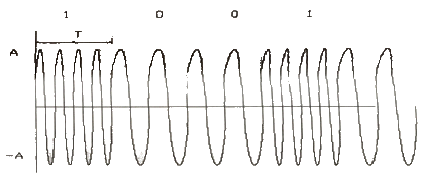
- 정편파의 주파수에 정보를 싣는 FSK 방식으로 2가지 주파수를 이용한다.
- 정편파의 진폭에 정보를 싣는 ASK 방식으로 2가지 주파수를 이용한다.
- 정편파의 진폭에 정보를 싣는 QAM 방식으로 2가지 주파수를 이용한다.
- 정편파의 위상에 정보를 싣는 2위상 편이변조방식이다.
(정답률: 79%)
13. 비안정 멀티바이브레이터 회로에서 콜렉터 전압의 파형은?
- 구형파
- 스텝파
- 임펄스파
- 정현파
(정답률: 80%)
14. RL 회로에서 시정수는 어떻게 정의하는가?
- RL
- L/R
- R/L
- 1/(RL)
(정답률: 65%)
15. 2진수 (101101)2을 10진수로 올바르게 표시한 것은?
- 40
- 45
- 50
- 55
(정답률: 94%)
16. 그레이 코드(Gray Code) 1110을 2진수로 변환하면?
- 1110
- 1100
- 1011
- 0011
(정답률: 77%)
17. RS 플립플롭 회로의 출력 Q 및
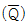
리셋(Reset) 상태에서 어떠한 논리값을 가지는가?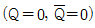
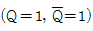
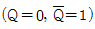
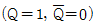
(정답률: 70%)
18. 다음 중 동기식 카운터에 대한 설명으로 옳은 것은?
- 플립플롭의 단수는 동작 속도와 무관하다.
- 논리식이 단순하고 설계가 쉽다.
- 전단의 출력이 다음 단의 트리거 입력이 된다.
- 동영상 회로에 많이 사용된다.
(정답률: 54%)
19. 지연 시간 50[ns]의 플립플롭을 사용한 5단 리플 카운터의 동작 최고 주파수는?
- 1[MHz]
- 4[MHz]
- 10[MHz]
- 20[MHz]
(정답률: 34%)
20. 조합 논리 회로 중 0과 1의 조합으로 부호화를 행하는 회로로 2n개의 입력선과 n개의 출력 선으로 구성된 것은?
- 디코더(Decoder)
- DEMUX
- MUX
- 인코더(Encoder)
(정답률: 93%)
2과목: 무선통신기기
21. 정현파 신호로 변조된 AM파의 측정시 최대진폭(Vmax)이 20[V]이고 최저진폭(Vmin)이 5[V]일 때 변조도(m)는 얼마인가?
- 0.9
- 0.8
- 0.6
- 0.4
(정답률: 80%)
22. 다음 중 광대역 FM 신호를 위해서 간접적인 방법을 사용할 경우 블록도의 구성요소가 아닌 것은?
- 적분기
- 협대역 위상 변조기
- 주파수체배기
- 미분기
(정답률: 69%)
23. 50[MHz]의 반송파를 최대주파수편이 50[kHz]로 하고 10[kHz]의 신호파로 FM 변조했을 때 변조지수와 주파수대역폭은?
- 변조지수 5, 대역폭 120[kHz]
- 변조지수 5, 대역폭 60[kHz]
- 변조지수 0.2, 대역폭 40[kHz]
- 변조지수 5, 대역폭 600[kHz]
(정답률: 48%)
24. 프리엠파시스회로에 시정수가 75[μs]인 경우 1[kHz]의 정현파를 가했을 때 입력과 출력 전압의 비
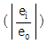
는 얼마인가?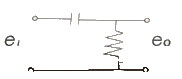
- 약 2
- 약 4
- 약 8
- 약 10
(정답률: 53%)
25. M진 PSK 수신기의 결정적인 위상 임계 값은 수신된 신호의 위상이 전송된 신호의 어느 범위 내에 있어야 하는가?
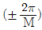
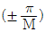
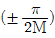
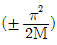
(정답률: 54%)
26. 다음 중 펄스 정형 필터(Pulse Shaping Filter)에 대한 설명으로 틀린 것은?
- 대역폭 제한을 한다.
- 심볼간 간섭(ISI)을 감소시킨다.
- 제곱근 레이즈드 여현필터(Root Raised Cosine Filter)를 사용한다.
- 신호 왜곡을 보상한다.
(정답률: 69%)
27. 계기착륙장치(ILS)의 기본구성으로 거리가 먼 것은?
- Glide path
- Tacan
- Localizer
- Marker
(정답률: 75%)
28. Inmarsat 통신위성과 해안지구국 사이의 링크에 사용되는 주파수 대역은?
- L 밴드
- S 밴드
- C 밴드
- K 밴드
(정답률: 77%)
29. ADSL을 사용하는 경우 음성과 데이터를 분리하여 주는 기능을 하는 장치를 말하며 가입자댁내 및 전화국내 양쪽에 반드시 설치해야 되는 장비는 무엇인가?
- 스크램블러
- 디스크램블러
- 스플리터
- 셋톱박스
(정답률: 86%)
30. 다음 중 TDMA 방식의 단점이 아닌 것은?
- 망 동기가 필요하다.
- 타임슬롯 수에 비례하여 용량이 증가한다.
- 수신 시에 비트 복구, 프레임 동기 등이 필요하다.
- 디지털 Data의 심볼 주기가 짧아 ISI를 극복하기 위해 동화기가 필요하다.
(정답률: 43%)
31. 동기식 CDMA(Code Division Multiple Access) 방식에서 대역폭이 확산 신호 전 대역폭의 100배일 경우 확산처리이득(Processing Gain)은 약 얼마인가?
- 10[dB]
- 20[dB]
- 30[dB]
- 40[dB]
(정답률: 84%)
32. 다음 중 해상업무용 무선설비에 대한 설명으로 옳지 않은 것은?
- 초단파대양방향무선전화장치는 선박조난시 조난선박, 생존정, 구조선박 상호간 통신을 위한 장치를 말한다.
- 수색구조용위치정보송신장치 중에는 수색구조용 레이다 트랜스폰더와 선박자동식별기능을 이용하는 장치도 있다.
- 디지털 선택호출 장치는 선박국과 해안국 또는 선박국 상호간 조난호출을 수행하는 기능을 가지고 있다.
- 네비텍스수신기(NAVTEX)는 상대선의 동적정보를 자동적으로 수신하는 기능을 가지고 있다.
(정답률: 72%)
33. 다음 중 UPS(Uninterruptible Power Supply)에 대한 설명으로 틀린 것은?
- 무정전 전원장치이다.
- 상용 입력 전원이 정전 또는 순시 전압 강하가 일어나도 부하에는 연속적으로 정전압의 전력이 공급가능하다.
- 출력전원은 항상 정주파수의 안정된 전력이 공급된다.
- 스위칭 방식으로 PWM(Pulse Width Modulation)은 사용하지 않는다.
(정답률: 79%)
34. 다음 중 인버터 방식에서 전류원과 전압원을 비교할 때 전압원 인버터의 장점이 아닌 것은?
- 유도 전동기 구동시 속도 제어 범위가 더 넓다.
- 제어회로가 비교적 간단하다.
- 용량성, 유도성 부하 모두에 사용 가능하다.
- 주로 소, 중용량에 사용한다.
(정답률: 75%)
35. 전기적으로 자속을 일으키는 전류의 위상과 토오크를 일으키는 전류의 위상이 직각이 되게 인버터에서 공급하는 전류를 위상제어하는 방식으로 위상을 별도의 센서 없이 자속과 토오크 성분을 제어하는 인버터 방식을 무엇이라 하는가?
- 범용 인버터
- 사이클로 벡터 인버터
- 센서리스 벡터 인버터
- 벡터 인버터
(정답률: 79%)
36. 어떤 시스템의 출력 전력이 100[mW]라 한다. 이 시스템의 출력 전력은 몇 [dBm]인가?
- 10[dBm]
- 20[dBm]
- 30[dBm]
- 40[dBm]
(정답률: 77%)
37. 다음은 진폭변조 회로의 출력을 Oscilloscope로 측정한 그림이다. 그림에서 a=2b이면 변조율은 대략 얼마가 되는가?
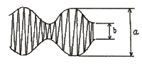
- 80[%]
- 50[%]
- 33.3[%]
- 25[%]
(정답률: 60%)
38. 다음 중 신호대 잡음비(S/N)에 대한 설명으로 옳지 않은 것은?
- Signal Noise Radio의 약자이다.
- S/N비=20log(S/N) (S: 평균 신호 전력, N: 평균 잡음 전력)이다.
- 통상적으로 아날로그 통신시스템에서의 성능평가 척도로 우수하다.
- 양호한 SNR 수준은 음성 40[dB] 이상, 영상 45[dB] 이상이다.
(정답률: 74%)
39. 1초당 회선상태가 4번 변화하고 변조율이 2,400[baud]인 시스템에서 10초당 1비트의 오류가 발생한다면 비트 오류율은 얼마인가?
- 1/12000
- 1/24000
- 1/48000
- 1/96000
(정답률: 69%)
40. 100비트로 구성되는 하나의 프레임 데이터를 전송하는데 0.25초가 소용되는 시스템에서 1,000개 프라임이 전송되었을 때 10,000비트당 오류비트의 수는? (단, 시스템은 어떤 원인으로 매 5초마다 1비트 오류가 발생한다고 가정한다.)
- 1.5
- 2.5
- 3
- 5
(정답률: 24%)
3과목: 안테나공학
41. 두 개의 평행 도체판 사이에는 전계의 시간적인 변화에 의해 변위전류가 흐르게 되며 변위 전류 주위에는 무슨 법칙에 의하여 자계가 발생되는가?
- Lentz 법칙
- Ampere 법칙
- Faraday 법칙
- Gauss 법칙
(정답률: 80%)
42. 다음 중 평면파(Plane Wave)에 대한 설명으로 틀린 것은?
- 전자파의 진행 방향에 수직으로 전계, 자계의 성분이 있다.
- 파면 또는 파두(Wave Front)가 평면을 형성하는 전자파이다.
- 전자파가 먼 거리를 진행하면 에너지 밀도가 변화한다.
- 동위상 면이 평면 구조를 구성하고 있는 파이다.
(정답률: 83%)
43. 비유전율 36, 비투자율 1인 매질에서 진동수 30[MHz]인 전자파의 파장은 약 얼마인가?
- 1.67[m]
- 16.67[m]
- 1.98[m]
- 19.98[m]
(정답률: 50%)
44. 매질의 비유전율이 9이고, 비투자율이 1일 때 전파속도는 약 얼마인가?
- 1/9×108[m/sec]
- 1/3×108[m/sec]
- 1×108[m/sec]
- 3×108[m/sec]
(정답률: 70%)
45. 파동방정식에서 전계의 일반해를 E(z, t)=f(z-ct)+g(z+ct)라고 할 때, 이 식에 나타내는 파로 각각 옳은 것은? (단, c=w/k로 c는 빛의 속도, w는 각속도, k는 전파상수이다.)
- 정재파+반사파
- 반사파+정재파
- 진행파+반사파
- 반사파+반사파
(정답률: 75%)
46. 다음 중 진행파와 정재파에 관한 설명으로 틀린 것은?
- 무한히 긴 선로에서는 진행파만 존재하고 반사파는 없게 된다.
- 정재파는 반사파와 진행파가 혼합되어 있는 형태이다.
- 원거리 전파시 전송손실은 정재파보다 진행파가 적다.
- 두 파가 서로 간섭하여 동위상으로 만나는 곳에서 최소점, 역위상인 점은 최대점을 갖는다.
(정답률: 54%)
47. 다음 중 반사계수와 투과계수에 관한 설명으로 옳지 않은 것은?
- 반사파와 입사파의 비를 반사계수, 투과파와 입사파의 비를 투과계수라 한다.
- 선로상에 존재하는 반사파의 정도를 표시하기 위해 반사계수를 사용한다.
- 반사계수가 크면 임피던스 부정합에 의해 부하에 도달하는 에너지가 커진다.
- 부하에 흘러 들어가는 에너지의 양을 표시하기 위해 투과계수를 사용한다.
(정답률: 77%)
48. 전송선로에서 임피던스 정합(Impedance Matching)이 이루어진 경우의 설명으로 틀린 것은?
- 반사파만 존재하고 진행파는 없다.
- 반사계수가 0이 된다.
- 투과계수가 1이 된다.
- 무한장 선로와 같은 효과를 갖게 된다.
(정답률: 65%)
49. 특성 임피던스가 50[Ω]인 급전선에 복사 임피던스가 75+j30[Ω]인 안테나를 연결하였다. 급전선상의 전압 정재파비의 크기는 얼마인가? (단, 계산값은 소수점 둘째자리에서 반올림한다.)
- 1.2
- 1.5
- 1.9
- 2.1
(정답률: 62%)
50. 절대이득이 1인 경우 반파장 다이폴 안테나의 절대이득[dB]은 얼마인가?(오류 신고가 접수된 문제입니다. 반드시 정답과 해설을 확인하시기 바랍니다.)
- 0.61[dB]
- 1.76[dB]
- 2.15[dB]
- 3.15[dB]
(정답률: 15%)
51. 주파수 3[MHz]를 고유주파수로 하는 반파장 다이폴 안테나의 길이는 몇 [m]인가?
- 10
- 25
- 50
- 100
(정답률: 60%)
52. 안테나의 실효인덕턴스를 Le, 실효정전용량을 Ce, 실효저항을 Re라고 하면 안테나 Q의 식으로 틀린 것은?
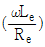
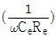
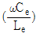
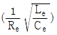
(정답률: 67%)
53. 다음 중 반파장 다이폴 안테나에 대한 설명으로 옳은 것은?
- 안테나를 설계할 때 단축률을 적용할 필요가 없다.
- 양단의 전압은 0이며, 고정통신용으로 사용한다.
- 연장코일과 단축콘덴서의 적용이 쉽다.
- 도선의 축 방향으로 전파복사가 거의 발생하지 않는다.
(정답률: 50%)
54. 초단파용 안테나들 중에서 수직편파용 안테나로서 수평면 내에서 무지향성인 안테나는?
- 브라운 안테나
- 턴스타일 안테나
- 수퍼게인 안테나
- 파라볼라 안테나
(정답률: 77%)
55. 태양에서 방출된 자외선이 갑자기 증가하여 전리층의 전자밀도가 증가하면 수 십분씩 단파통신이 끊기는 일이 있다. 이러한 영향과 관계가 가장 적은 주파수는?
- 5[MHz]
- 10[MHz]
- 15[MHz]
- 30[MHz]
(정답률: 58%)
56. 다음 중 최적사용주파수(FOT)에 대한 설명으로 옳지 않은 것은?
- 송신전력에 의하여 결정된다.
- MUF의 85%에 해당하는 주파수이다.
- MUF와 LUF 사이에서 결정된다.
- 임계주파수에 의하여 결정된다.
(정답률: 65%)
57. 다음 중 주파수 대역에 따른 전리층 전파의 특징으로 틀린 것은?
- 중파의 경우 야간에 E층 반사를 할 수 있다.
- 장파의 경우 주야 구분 없이 D층의 영향을 받는다.
- 단파의 경우 주간에 높은 주파수, 야간에 낮은 주파수를 사용한다.
- 장거리 통신에서 장파는 페이딩이 적으나 단파는 페이딩이 일어나기 쉽다.
(정답률: 69%)
58. 전리층 반사파를 이용하여 원거리 통신이 가능한 주파수대는?
- 장파
- 단파
- 초단파
- 극초단파
(정답률: 79%)
59. 다음 중 페이딩에 대한 설명으로 옳지 않은 것은?
- 간섭성 페이딩은 근거리 페이딩과 원거리 페이딩으로 구분된다.
- 전파가 전리층을 투과하거나 반사할 때 감쇠가 발생함으로써 생기는 페이딩을 흡수성 페이딩이라고 한다.
- 전리층 반사 시 직선편파가 지구자계의 영향으로 타원편파가 되어 생기는 페이딩을 편파성 페이딩이라고 한다.
- 도약거리 부근에서 일어나며, 전리층을 따라 반사하거나 투과함으로써 생기는 페이딩을 선택성 페이딩이라고 한다.
(정답률: 48%)
60. 선택성 페이딩을 방지하기 위하여 주로 사용하는 방식은?
- AGC 회로
- AVC 회로
- 주파수 합성법
- 편파 합성법
(정답률: 59%)
4과목: 통신영어 및 교통지리
61. Which is not the purpose of the Union?
- To maintain and extend international cooperation between all Member States of the Union
- To promote the use of telecommunication services
- To harmonize the actions of Member States
- To maintain and extend the safety of life at sea
(정답률: 36%)
62. Choose the best translation into Korean of the following words.
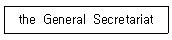
- 사무총국
- 사무총장
- 일반 비서
- 비서실장
(정답률: 47%)
63. Choose the best definition of certain term which would be appropriate in the following sentence.
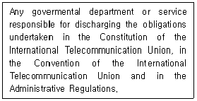
- Government Telecommunications
- Administration
- Delegation
- Harmful Interference
(정답률: 54%)
64. Which of the following term is most improper?
- Radio - A general term applied to the use of radio waves
- Communication - Telecommunication by means of radio waves
- Waves or hertzian waves - Electromagnetic waves of frequencies arbitrarily lower than 3,000[GHz], propagated in space without artifical guide
- Telecommunication - Any transmission, emission or reception of signs, signals, writings, images and sounds or intelligence of any nature by wire, radio, optical or other electromagnetic systems
(정답률: 79%)
65. Which of the following term is most improper?
- Land station : A land station in the maritime mobile service
- Ship earth station : A mobile earth station in the maritime mobile-satellite service located on board ship
- Ship station - A mobile station in the maritime mobile service located on board a vessel which is not permanently moored, other than a survival craft station
- Base station : A land station in the land mobile service
(정답률: 50%)
66. Choose the wrong Korean version for the underlined parts.
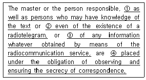
- 무선전보의 본문의 내용을 알고 있는 모든 사람뿐만 아니라
- 전보의 수신중에 대한
- 무선통신업무를 통하여 취득되는 어떤 정보이든지 간에
- 통신의 비밀을 엄수하고 보장하여야 할 의무를 진다.
(정답률: 63%)
67. Choose the proper meanings of the sentence below.
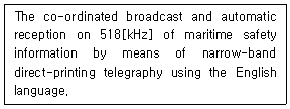
- International NAVTEX Service
- International EGC Service
- International SAR Service
- International Warning Service
(정답률: 86%)
68. 다음 중 약어의 설명이 옳지 않은 것은?
- AFFIRMATIVE : YES
- ALL STATIONS : CQ
- UNKNOWN STATIONS : QRZ
- NEGATIVE : NIL
(정답률: 79%)
69. 다음 중에서 전송할 문자의 발음이 정확하지 않은 것은?
- T : TANG GO
- G : GOLF
- A : AL FAH
- Z : ZOO NEE
(정답률: 80%)
70. "Leeway"의 의미를 옳게 나타낸 것은?
- 앞길
- 뒷길
- 풍압차
- 풍향차
(정답률: 80%)
71. What do we call "Shaft tunnel" in Korean?
- 통로
- 측로
- 선로
- 축로
(정답률: 89%)
72. What does mean the following glossary in the IMO English? "Roundabout"(오류 신고가 접수된 문제입니다. 반드시 정답과 해설을 확인하시기 바랍니다.)
- 원형선박
- 원형교차선박
- 원형교차점
- 원형중심점
(정답률: 16%)
73. 해사안전정보 유포를 위한 NAVAREA 해역에서 우리나라는 몇 구역에 속하는가?
- 제6구역
- 제9구역
- 제11구역
- 제16구역
(정답률: 83%)
74. 우리나라에서 운용하고 있는 NAVTEX 해안국은 어디에 있는가?
- 인천/동해
- 죽변/변산
- 목포/강릉
- 군산/동해
(정답률: 84%)
75. 우리나라 콘테이너 정기 화물선의 태평양 연안의 기항지가 아닌 곳은?
- Vancouver항
- Auckland항
- Seattle항
- ST. Johns항
(정답률: 79%)
76. 다음 중 오세아니아(Oceania) 주에 있지 않는 해협은?
- Torres Straits
- Bass Straits
- Cook Straits
- Magellan Straits
(정답률: 74%)
77. 우리나라에서 Yokohama를 거쳐 San Francisco로 항행하는 선박의 최단 항로는?
- Yokohama로 부터 북위 35°선 부근의 위도를 따라 바로 동쪽으로 태평양을 횡단하는 항로
- Yokohama로부터 남동진(南東進)하여 Midway 북단 북위 30°선 부근의 위도를 따라 항진하는 항로
- Yokohama, Midway, San Francisco를 적선으로 맺는 항로
- Yokohama부터 Kuril 열도, Aleutian 열도에 연하여 북쪽 대권을 항진하는 항로
(정답률: 58%)
78. 다음 중 온난전선에 대한 설명으로 맞지 않는 것은?
- 난기가 우세하여 한기를 올라타면서 진행하는 전선이다.
- 이 전선이 통과하면 기온이 상승한다.
- 전선의 경사가 비교적 급하여 날씨의 회복이 빠르다.
- 전선의 전방에 넓은 범위의 지속적인 강우를 보인다.
(정답률: 63%)
79. 다음 중 기온은 1년을 주기로 규칙적으로 변하는데, 월평균 기온의 최고와 최저의 차를 무엇이라 하는가?
- 월교차
- 연교차
- 연변화차
- 연온도차
(정답률: 72%)
80. 다음 중 선박기상방송에 사용하는 기압의 단위로서 맞는 것은?
- mb
- hPa
- mmHg
- kg/cm
(정답률: 80%)
5과목: 전파관계법규
81. 다음 중 전파법의 목적이 아닌 것은?
- 전파의 효율적인 이용
- 전파에 관한 기술의 개발 촉진
- 공공복리의 증진에 이바지
- 주파수의 공동사용
(정답률: 63%)
82. 다음 중 전파법에서 송신설비에 대한 정의로 올바른 것은?
- 전파를 보내는 설비로서 송신장치와 송신안테나로 구성되는 설비
- 송신장치에서 발생하는 고주파에너지를 공간에 복사하는 설비
- 무선통신의 송신을 위한 고주파에너지를 발생하는 장치설비
- 송수신장치에서 발생하는 고주파에너지를 공간에 복사하는 설비
(정답률: 72%)
83. 다음 중 “허가 또는 신고에 의하여 개설하는 무선국이 이용할 특정한 주파수를 지정하는 것”으로 정의되는 것은?
- 주파수지정
- 주파수분배
- 주파수할당
- 주파수회수
(정답률: 79%)
84. 다음 중 전파자원을 확보하기 위하여 마련해야 할 시책이 아닌 것은?
- 새로운 주파수의 이용기술 개발
- 이용 중인 주파수의 이용효율 향상
- 주파수의 국내등록
- 국가간 전파의 혼신을 없애고 방지하기 위한 협의
(정답률: 75%)
85. 다음 중 무선국 개설허가의 유효기간이 1년인 것은?
- 실험국
- 아마추어국
- 간이무선국
- 무선측위국
(정답률: 79%)
86. 다음 중 우주국의 개설조건으로 맞는 것은?
- 우주국은 우주지구국에서 자동조작에 의하여 전파를 송·수신할 수 있고 우주국의 궤도를 변경할 수 있는 기능을 갖추어야 한다.
- 우주국은 우주지구국설비에서 수동조작에 의하여 전파의 발사를 즉시 정지할 수 있고 그 궤도를 변경할 수 있는 시설을 갖추어야 한다.
- 우주국은 관제설비에서 원격조작에 의하여 전파의 발사를 즉시 정지할 수 있고 그 궤도를 변경할 수 있는 기능을 갖추어야 한다.
- 우주국은 관제설비에서 자동조작에 의하여 전파를 송·수신할 수 있고 그 궤도를 자동으로 변경할 수 있는 기능을 갖추어야 한다.
(정답률: 54%)
87. 다음 중 방송국의 무선국개설허가의 유효기간은? (단, 일부 초단파 공동체 라디오 방송국은 예외)
- 1년
- 2년
- 3년
- 5년
(정답률: 59%)
88. 무선국의 운용 등에 관한 규정 중 조난통신·긴급통신에 관한 사항으로서 적합하지 않은 것은?
- 선박국의 조난호출 또는 긴급호출을 하고자 하는 때에는 그 선박의 책임자의 명령에 따라야 한다.
- 해안국 및 선박국은 긴급신호를 수신한 때에는 조난통신을 행하는 경우 외에는 최소한 1분 이상 계속하여 이를 수신하여야 한다.
- 비상위치지시용 무선표지국에서 송신하는 통보는 조난통신으로 본다.
- 조난선박국과 조난통신을 관장하는 무선국은 조난통신을 방해하거나 방해할 우려가 있는 모든 통신의 정지를 요구할 수 있다.
(정답률: 79%)
89. 조난 시 무선전화로 조난통신을 할 때 송신 순서는?
- 경보신호 → 조난호출 → 조난통보
- 조난통보 → 경보신호 → 조난호출
- 조난호출 → 경보신호 → 조난통보
- 경보신호 → 조난통보 → 조난호출
(정답률: 65%)
90. 조난선박국과 조난통신을 관장하는 무선국은 조난통신을 방해하거나 방해할 우려가 있는 모든 통신의 정지를 요구할 수 있다. 무선전화의 경우에 사용하는 신호는?
- RECEIVED MAYDAY
- SEELONCE MAYDAY
- SEELONCE FEENEE MAYDAY
- MAYDAY MAYDAY MAYDAY
(정답률: 86%)
91. 다음 중 무선종사자를 무선국에 배치할 수 있는 자는?
- 피성년 후견인
- 외환의 죄를 위반하여 5년형을 선고받고 집행이 끝난 후 3년이 경과한 자
- 파산선고를 받은 자
- 국가보안법을 위반하여 금고 이상의 형을 받고 그 집행 중에 있는 자
(정답률: 87%)
92. 우리나라가 ITU에 정식으로 가입한 해는?
- 1950년
- 1949년
- 1952년
- 1954년
(정답률: 88%)
93. 다음 중 ITU의 조직 및 기능에 관한 설명으로 잘못된 것은?
- 전권위원회의는 회원국의 대표단으로 구성되며 매 4년마다 개최한다.
- 이사회는 전권위원회의에서 선출된 회원국으로 구성된다.
- 전파규칙은 전파관리위원회(RRB)에서 개정한다.
- 사무총장은 ITU 활동의 행정적 및 재정적 사항 전반에 관하여 이사회에 대하여 책임을 진다.
(정답률: 77%)
94. 전파규칙(RR)에서 주파수의 분배를 위하여 세계를 몇 개의 지역으로 구분하였다. 우리나라가 속하는 지역은?
- 제1지역
- 제2지역
- 제3지역
- 제4지역
(정답률: 58%)
95. 다음 중 조난 무선국과 조난 무선국에 원조를 제공하는 무선국의 통신운용에 대한 설명으로 틀린 것은?
- 조난 무선국은 어떠한 상황에서도 해안국과의 통신을 우선해야 한다.
- 전파규칙은 조난 중에 있는 무선국이 타 무선국의 주목을 끌고, 조난 무선국의 상태와 위치를 알리고, 원조를 얻을 목적으로 이용 가능한 모든 무선통신 수단의 사용을 금하지 아니한다.
- 전파규칙은 조난 무선국에게 원조를 제공하는 무선국의 원조를 제공할 목적으로 이용 가능한 모든 무선통신 수단의 사용을 금하지 아니한다.
- 인명의 안전이나 선박 또는 항공기의 안전과 관련되는 상황에서는 육상국이 다른 범주의 고정국 또는 육상국과 통신할 수 있다.
(정답률: 70%)
96. 선박의 조난사고 발생 시 신속한 조난을 수신하여 통합적인 수색구조작업을 할 수 있도록 지원하는 세계해상조난 및 안전 제도를 나타낸 것은?
- Inmarsat
- GMDSS
- INTELSAT
- IMO
(정답률: 86%)
97. 다음 중 통신 보안을 강화하여야 하는 중요도 순으로 나열한 것은?
- Ⅰ급 비밀＞Ⅱ급 비밀＞Ⅲ급 비밀＞대외비
- Ⅲ급 비밀＞Ⅱ급 비밀＞Ⅰ급 비밀＞대외비
- 대외비＞Ⅰ급 비밀＞Ⅱ급 비밀＞Ⅲ급 비밀
- 대외비＞Ⅲ급 비밀＞Ⅱ급 비밀＞Ⅰ급 비밀
(정답률: 89%)
98. 다음 통신수단 중 통신 보안성이 가장 취약한 것은?
- 전령통신(인편)
- 우편통신
- 전기통신
- 음향통신
(정답률: 77%)
99. 다음 중 “상대통신망에 개입하여 상대를 오인토록 하고 비밀을 탐지하려는 수단”을 나타내는 것은?
- 기만통신
- 비밀통신
- 안전통신
- 긴급통신
(정답률: 85%)
100. 다음 중 무선전화의 통신 보안대책과 거리가 먼 것은?
- 주요내용 보안장비 또는 보안자재 사용
- 전파 월북 요인 차단
- 전파차단 대책 강구
- 최대 출력 유지
(정답률: 82%)